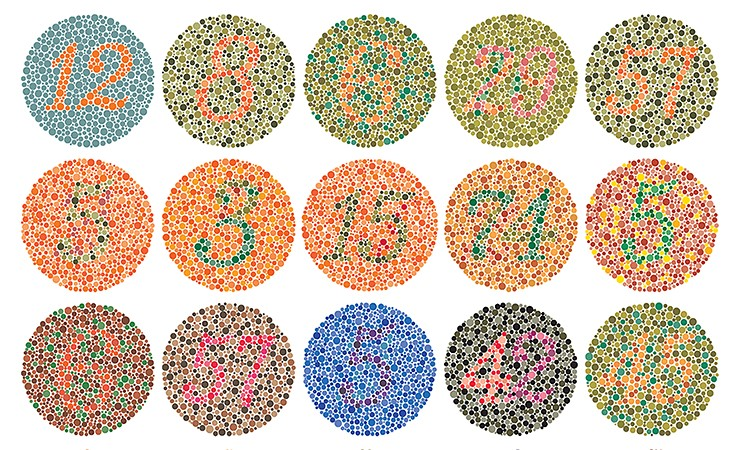
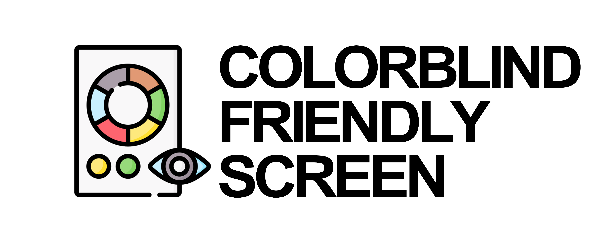

Hello World
Hello World
Hello World
Hello World
Hello World
Hello World
Hello World
H
H
H
H
H
H
H
H
H
H
H
H
H
H
H
H
H
H

ฟิลเตอร์ปรับสีสำหรับผู้ที่มีภาวะตาบอดสี
เลือกประเภทภาวะตาบอดสี
Normal Vision
กลับสู่สายตาปกติ
Protanope
ตาบอดสีเเดง
Deuteranope
ตาบอดสีเขียว
Tritanope
ตาบอดสีน้ำเงิน
ความเข้มสี (Adjust Saturation)
100%
ฟิลเตอร์จำลองภาวะตาบอดสี
เลือกประเภทภาวะตาบอดสี
Protanomaly
เซลล์รูปกรวยสีเเดง
บกพร่อง
ทำให้เเยกเเยะสีเเดง, ส้ม, เหลือง ออกจากสีเขียวได้ยาก
Protanopia
เซลล์รูปกรวยสีเเดง
ขาดหาย
ทำให้มองเห็นสีเเดงเป็นดำ เเละเทาทั้งหมด
Deuteranomaly
เซลล์รูปกรวยสีเขียว
บกพร่อง
ทำให้เเยกเเยะสีเขียว ออกจากสีเเดง, ส้ม, เหลืองได้ยาก
Deuteranopia
เซลล์รูปกรวยสีเขียว
ขาดหาย
ทำให้มองเห็นสีเขียวเป็นดำ เเละเทาทั้งหมด
Tritanomaly
เซลล์รูปกรวยสีน้ำเงิน
บกพร่อง
ทำให้เเยกเเยะสีน้ำเงิน, เขียว, เเดง, เหลืองได้ยาก
Tritanopia
เซลล์รูปกรวยสีน้ำเงิน
ขาดหาย
ทำให้เเยกเเยะสีที่ผสมกับสีน้ำเงินไม่ได้
Achromatomaly
เซลล์รูปกรวยทุกสี
บกพร่อง
ทำให้เห็นทุกสีไปในโทนมืดทั้งหมด
Achromatopsia
เซลล์รูปกรวยทุกสี
ขาดหาย
ทำให้เห็นทุกสีเป็นดำ เเละเทาทั้งหมด
ดูดสี
HEX :
#ff0000
RGB :
rgb(255, 0, 0)